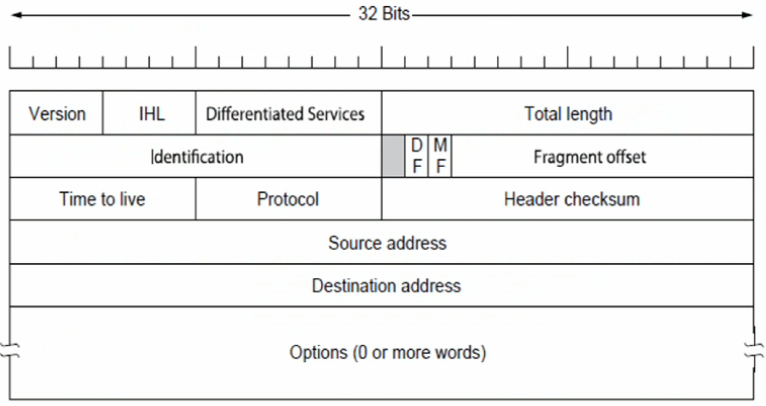
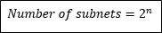
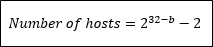
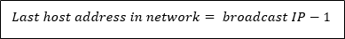
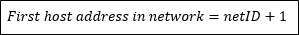
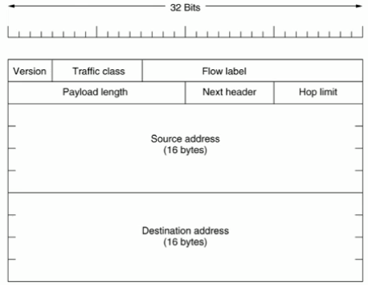

Internet Protocol (IP)
IP is the common language over the Internet. Kinda like how English is the common language in Europe.
The IP protocol was designed in the late 1970's by Vint Cerf and Bob Kahn.
The Internet is a large collection of different kinds of subnet's. IP is like the 'glue' that allows all these subnet's to communicate and exchange data.
IP provides delivery of packets from one host to another host in The Internet, even if the hosts are in different networks.
An IP Address is a unique identifier for any device connected to a computer network such as the Internet.
Currently there are two versions of IP addresses in use today:
- IP Version 4 (IPv4)
- IP Version 6 (IPv6)
IPv4
IPv4 has been the common IP version of the Internet since 1983 January 1st.
There are 4,294,967,296 (approx. 4.3 billion) unique IP addresses with IPv4.
IPv4 addresses are 32-bits or 4-bytes long.
They are displayed in a dotted-decimal format that contains four octets, with each number in range 0-255
- Example = 54.225.229.200
- Lowest = 0.0.0.0
- Highest = 255.255.255.255
Each IPv4 address consists of (netID, hostID)
- Example = 54.255.229.200
- Lowest = 0.0.0.0
- Highest = 255.255.255.255
The netID identifies a network.
The hostID identifies the specific host on that network.
All IP hosts on the same IP network must have the same netID
- This reduces the size of the routing table.
- Why? Because there is 1 entry per network.
- If there was 1 entry per host, that would be a bigggg table!
IPv4 Format
The diagram below shows the header format of IPv4:
Figure 5.7a
Let's explore Figure 5.7a in a bit more detail.
- Version - 4
- IHL - stands for Internet Header Length, calculated by len(header)
- Differentiated services - specifies type service supplied to this packet (e.g. real-time)
- Total length - len(datagram)
- Fragment Offset - if you don't want routers to fragment your packet, set fragment offset = 1
- MF - 1 if the fragment is the final fragment, else 0
- DF - starting bit-position relative to payload
- Identification - unique ID to distinguish IP packets including all their fragments.
- Header Checksum - a CRC checksum for the header only. Recalculated at each router.
- Protocol - which transport layer protocol should be used for this packet (UDP? TCP?)
- Time to live - how long does the packet live for? Prevents a packet from roaming around the Internet forever causing congestion. Each time this packet reaches a router, decrement this number by 1. if time_to_live = 0 then drop the packet.
- Source address - 32-bit IP address of sender.
- Destination address - 32-bit IP address of receiver.
- Options - used to extend the functionality of IP (not used much anymore...)
- payload - data from the transport layer
IPv4 Classful Addressing
IP addresses can be divided into 5 classes { A, B, C, D, E }
Depending on the size of your network, you are put into one of these classes.
| Class | First section | Type | Default subnet mask |
|---|---|---|---|
| A | 0xxxxxxx | Large organisation | 255.0.0.0 |
| B | 10xxxxxx | Mid-size organisation | 255.255.0.0 |
| C | 110xxxxx | Small organisation | 255.255.255.0 |
| D | 1110xxxx | Multi-class organisation | |
| E | 11111xxx | Reserved for future use |
Examples of IPv4 Classful Addressing
Example 1
128 = 1000000
∴ Class B
Example 2
61 = 00111101
∴ Class A
Example 3
249 = 11111000
∴ Resreve for future use
But what is a 'Default subnet mask'?
- It's just an IP address sent with each packet.
- It basically tells you how many bits are reserved for the network ID.
- The default subnet mask is different for each class...
- When the packet arrives at the router, it computes (IP address & default subnet mask)
- For example with class A: 61.210.45.175 &
- For example with class B: 128.15.215.95 &
255.0.0.0
61.0.0.0 this is the default subnet mask
255.255.0.0
128.15.0.0 this is the default subnet mask
What is the main disadvantage of classful addressing?
- If a company wanted 10,000 hosts (a typical amount of hosts for many companies) they will be forced to use class B and waste 55,000 hosts.
- Even if a company wanted 255 hosts, they would be forced to use class B and waste 64745 hosts!
- That's a lot of wasted hosts!
- A better alternative to Classful Addressing is Classless Addressing...
IPv4 Classless Addressing
Classless addressing aims to reduce the wastage of IPv4 addresses.
We sometimes call Classless addressing CIDR.
As well as having a default subnet mask, we also calculate and use a custom subnet mask which is how we will reduce the wastage.
These are the main differences between Classless and Classful addressing:
- The network ID is no longer fixed at 8,16,24 or 32. It can be any number allowing you to get a more precise number of hosts in your network.
- We now have a custom subnet mask -
- We can do subnetting - we can divide a class into multiple subnets.
CIDR notation mean we write the IP address / length, where:
- IP address = the 32-bit address
- Length = number of bits that are allocated to the network ID
For example, 204.17.5.0/28
So now what we do with 28 is we calculate a 'Custom subnet mask'

- The default subnet mask = 255.255.255.255
- The custom subnet mask = 255.255.255.240
The structure of a custom subnet mask is divided up into 3 parts:
- netID
- hostID is divided up into 2 sub-parts
- subnetID
- hostID
Examples of IPv4 Classless Addressing
Here are some important formulas that you need to remember!
   Where...
- n = number of bits borrowed from hostID to make the subnet mask (in other words, n = len(subnet))
- b = the number of bits allocated to the netID (in other words, the length field)
Also...
- Network Address = everything after n = 0
- Broadcast Address = everything after n = 1
Example 1
a) What is the maximum number of subnets that can be created?
b) What is the maximum number of hosts in each subnet?
c) What is the first host address in the network?
d) What is the last host address in the network?
a)
128 = 10000000
∴ Class B
Default subnet mask = 11111111.11111111.00000000.00000000
Custom subnet mask = 11111111.11111111.11111110.00000000
<--7-->
= 27
= 128
b)
= 232-23 - 2
= 29 - 2
= 510
c)
netID = 10000000.11010000.00000000.00000000
first host address = netID + 1
= 10000000.11010000.00000000.00000000 + 1
= 10000000.11010000.00000000.00000001
= 128.204.0.1
d)
broadcastID = 10000000.11010000.000000001.11111111
last host address = broadcastID - 1
= 10000000.11010000.00000001.11111111 - 1
= 10000000.11010000.00000001.11111110
= 128.204.0.254
Public IP addresses are valid destinations on the Internet.
Private IP addresses can only be used within private networks (home or a small company). It can't be used anywhere else in the Internet.
Examples of reserved prefixes for private IP addresses are:
- Class A => 10.0.0.0/8 (2nd most common)
- Class B => 172.16.0.0/16 (3rd most common)
- Class C => 192.168.0.0/12 (1st most common)
To communicate with the Internet, a NAT box maps private IP addresses to 1 public IP address.
That NAT box is simply a table that maps private IP address -> public IP address.
IPv6
The Internet is rapidly increasing in popularity all the time, and one day 4.3 billion IPv4 addresses won't be enough...
Because of this, we are slowly migrating towards IPv6.
IPv6 was released in 1999.
IPv6 has 340,282,366,920,938,000,000,000,000,000,000,000,000 unique possible IP addresses (approx. 340 Undecillion).
IPv6 addresses are 128-bits or 32-bytes long.
The main difference between IPv6 and IPv4 is that now the length of the header is fixed.
This wasn't the case with IPv4.
IPv6 Format
The format of the IPv6 header actually seems a lot simpler than IPv4:
Figure 5.7b
Let's explore Figure 5.7b in a bit more detail.
- Version - 6
- Traffic class - supports prioritisation/(similar to differentiated services from IPv4)
- Flow label - serves as a hint to routers and switches with multiple outbound paths that these packets should stay on the same path. (similar to how virtual circuits work)
- Payload length - if you want to know the IP address of each router between a sender and receiver (if you leave this field empty, by default it uses a transport layer protocol)
- Next header - exactly the same as TTL from IPv4
- Hop limit - 16-byte IP address of sender.
- Source address - 16-byte IP address of receiver.
- Destination address - unique ID to distinguish IP packets including all their fragments.
note: there is no CRC - this is assumed to be handled by the Data-Link layer. This is why IPv6 is much faster than IPv4, because it doesn't waste time computing the CRC checksum - yay.